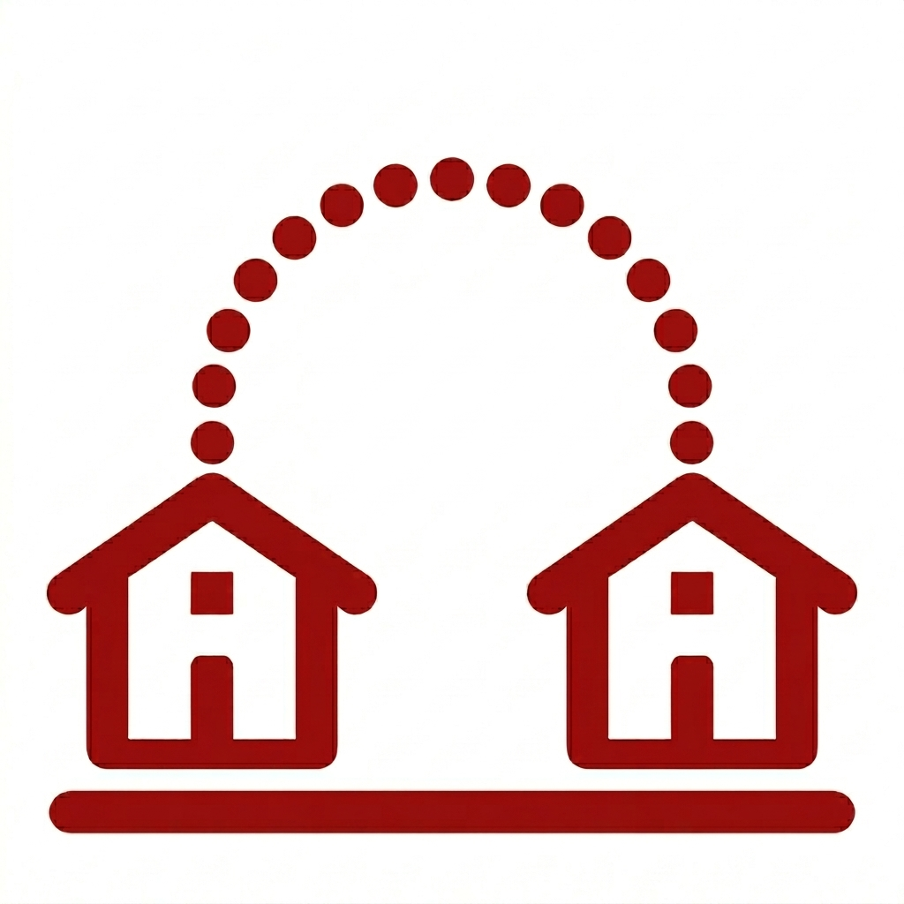

- buLogin
Desde sempre a cultura esteve na minha vida, partindo deste principio eu quero que este projeto ajude ela a se propagar dentro do lugar onde moro que se situa na Zona Leste de São Paulo
Dentro da minha familia, sua grande maioria é composta por músicos e pessoas que trabalham diariamente com a cultura, mas quem me inspirou a criar este projeto foi o meu tio que possui seu proprio centro de cultura, no qual eu cresci vivendo a cultura que nele era emanada.
Embora existam outros meios de divulgação a cada evento que fazemos eu percebo o quanto faz falta uma forma de divulgação totalmente direcionada a cultura, ainda mais dentro de bairros mais afastados.
Minhas Metas
.png)
Um dos meus objetivos e fazer com que as pessoas saibam dos eventos que vão ocorrer dentro das proximidades por via dos posts, fazendo com que assim todos possam curtir e aproveitar tudo o que a cultura pode oferecer.

Pretendo fazer com que a partir deste projeto os centros culturais possam enxergar uns aos outros como um grande rede de apoio, pois no fim todos tem o mesmo objetivo, assim um poderá ajudar o outro e será mais fácil achar bons voluntários.